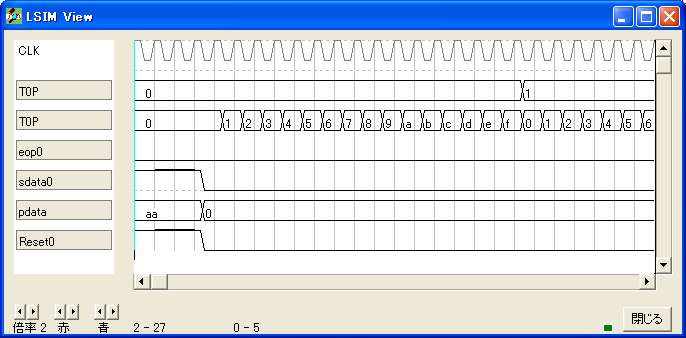
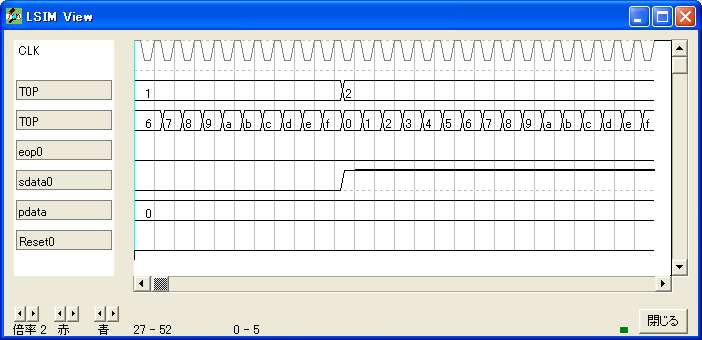
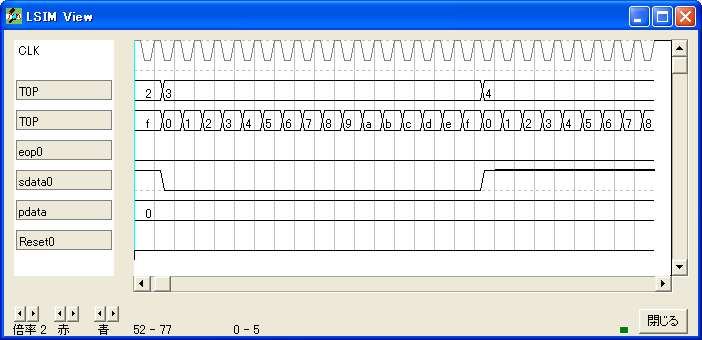
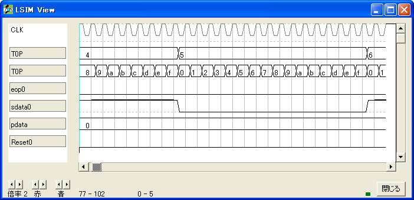
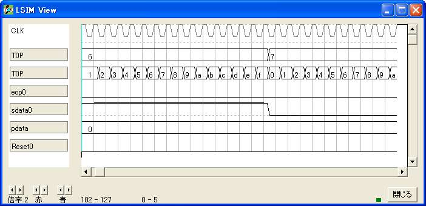
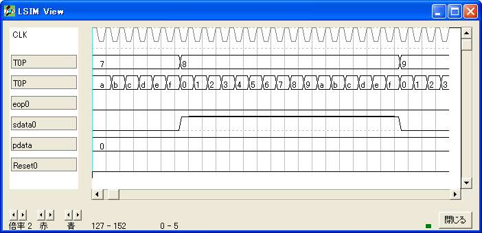
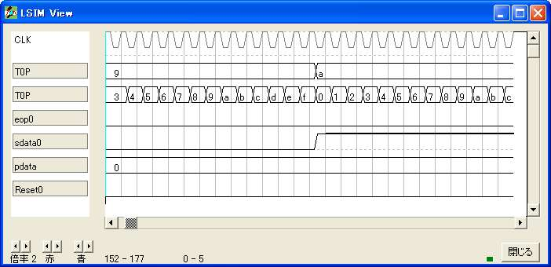
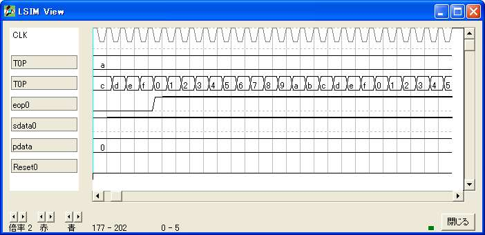

{ =============================================== }
{ 非同期直列送信 }
{ =============================================== }
loginame sample
{ =============================================== }
{ 実効譜 }
{ =============================================== }
entity main
input Reset; {初期化}
input pdata[8]; {データ}
output sdata; {送信出力}
output eop; {送信完了}
output T0P[8]; {テスト端子}
bitn lbitcount[4]; {pdataの下4桁の1の個数}
bitn hbitcount[4]; {pdataの上4桁の1の個数}
bitn bitcount[4]; {pdataの1の個数}
bitr regdata[11]; {データ記憶}
bitr pc[4]; {パルス幅計数}
bitr bc[4]; {桁計数}
bitr regeop;
{ ----------------------------------------------- }
{ パリティ }
{ ----------------------------------------------- }
switch(pdata.0:3)
case 0: lbitcount=0;
case 1: lbitcount=1;
case 2: lbitcount=1;
case 3: lbitcount=2;
case 4: lbitcount=1;
case 5: lbitcount=2;
case 6: lbitcount=2;
case 7: lbitcount=3;
case 8: lbitcount=1;
case 9: lbitcount=2;
case 10: lbitcount=2;
case 11: lbitcount=2;
case 12: lbitcount=2;
case 13: lbitcount=3;
case 14: lbitcount=2;
case 15: lbitcount=4;
endswitch
switch(pdata.4:7)
case 0: hbitcount=0;
case 1: hbitcount=1;
case 2: hbitcount=1;
case 3: hbitcount=2;
case 4: hbitcount=1;
case 5: hbitcount=2;
case 6: hbitcount=2;
case 7: hbitcount=3;
case 8: hbitcount=1;
case 9: hbitcount=2;
case 10: hbitcount=2;
case 11: hbitcount=2;
case 12: hbitcount=2;
case 13: hbitcount=3;
case 14: hbitcount=2;
case 15: hbitcount=4;
endswitch
bitcount=lbitcount+hbitcount;
{ ----------------------------------------------- }
{ データ操作 }
{ ----------------------------------------------- }
if (Reset)
regdata.0=0; {スタートビット}
regdata.1:8=pdata; {データビット}
regdata.9=bitcount.0; {パリティビット}
regdata.10=1; {ストップビット}
else
if (pc==15)
if (bc==10)
regdata=regdata; {送信終了}
else
regdata.0:9=regdata.1:10; {次ビット送り}
endif
else
regdata=regdata;
endif
endif
{ ----------------------------------------------- }
{ 進行 }
{ ----------------------------------------------- }
if (!Reset)
pc=pc+1;
endif
if (!Reset)
if (pc==15)
if (bc==10) {送信終了}
bc=bc;
regeop=1;
else {次ビット送り}
bc=bc+1;
regeop=regeop;
endif
else
bc=bc;
regeop=regeop;
endif
endif
eop=regeop;
{ ----------------------------------------------- }
{ 送信 }
{ ----------------------------------------------- }
if (Reset)
sdata=1; {送信解除中}
else
sdata=regdata.0; {送信中}
endif
T0P.0:3=pc; {テスト端子代入}
T0P.4:7=bc; {テスト端子代入}
ende
{ =============================================== }
{ 機能実行譜 }
{ =============================================== }
entity sim
output Reset;
output pdata[8];
output sdata;
output eop;
output T0P[8];
bitr tc[8];
part main(Reset,pdata,sdata,eop,T0P)
tc=tc+1;
if (tc<5)
Reset=1;
pdata=0b10101010;
endif
ende
endlogic







